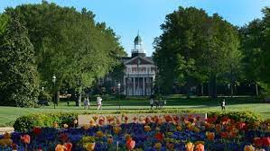
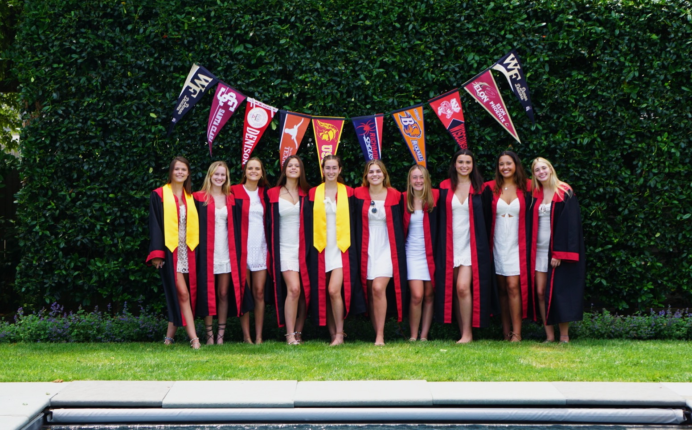

Growing up in Rye, NY I attended the public High School. Spending my 4 years at Rye High School I learned so much, and met my best friends.


Attending Rye High School led me to continuing my education and attending Elon. Now in my second year at Elon I plan on pursuing a degree in Bachelor of arts majoring in Strategic Communications, with a minor in Marketing Professional Sales, with an expected graduation date of May 2025.